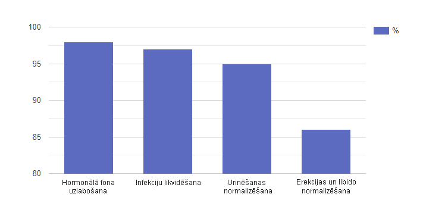

Jaunajā "Doktora Oza šova" izlaidumā runāja par prostatītu
Doktors Ozs: Annija, Daini, sveicu jūs studijā! Annija, pirms dažiem mēnešiem jūs vērsāties pie mums ar palīdzības lūgumu. Pastāstiet, lūdzu, kāds ir iemesls.
Annija D.: Jā, iniciatore biju es. Man likās, ka mūsu laulība bija tuvu finālam dēļ tā, ka vīrs ievērojami izmainījās. Es pierunāju viņu griezties pie jums pēc palīdzības. Jūsu šovs ir mūsu pēdējā cerība. Dainis neko man nestāstīja un pie speciālistiem negribēja griezties.
Diktors Ozs: AnnijA, pastāstiet, lūdzu, kāpēc jūs nolēmāt, ka Dainis ir mainījies?
Annija D.: Aptuveni sešus mēnešus mēs nenodarbojāmies ar seksu. Es jau gan veļu seksīgu pirku, gan romantiskas vakariņas viņam gatavoju. Nekas nelīdzēja! Likās, viņš vispār uz mani, kā uz sievieti, vairs neskatās. Protams, pirmā lieta, ko es padomāju, ka iemesls ir manī. Raudāju, pārdzīvoju... Mēs nepārtraukti strīdēties sākām] uz šā pamata.
Doktors Ozs: Varbūt viņam parādījās mīļākā. Jūs nedomājāt par tādu notikumu attīstību?
Annija D.: Protams, domāju. Bet viņš ir frīlanseris un gandrīz visu laiku mājās pavada. Ar mīļāko viņam vienkārši nav kad satikties. Bet uz porno viņam laiks, izrādās, bija.

Annijai Drūvei bija aizdomas par vīra krāpšanu, bet ne tas bija iemesls, kādēļ viņiem nebija intīmās dzīves
Doktors Ozs: Oho, pat tā?!
Annija D.: Jā, reiz pārsteidza viņu vannas istabā. Viņš aizmirsa aizvērt durvis. Mani tas ļoti izbesīja: ar mani, tātad, viņš ar seksu atsakās nodarboties, bet uz nepazīstamām kailām sievietām masturbē. Mēs sākām strīdēties un Dainis tik ļoti sadusmojās, ka meta manī pudeli ar šampūnu, kas trāpīja man galvā. Pie manis toreiz pat ātrā palīdzība atbrauca, jo man gāja asinis uz pakauša. Bija bail, ka man varētu būt satricinājums. Bet viss bija kārtībā. Es sapratu, ka ar Daini kaut kas notiek, bet nezināju, kas tieši.
Doktors Ozs: Man ir jautājums Dainim: kas notika patiesībā? Kāpēc jūs neteicāt sievai, kāds ir jūsu aukstuma iemesls?
Džordžs D.: Vispirms gribu teikt, ka man ir kauns par savu uzvedību. Un es gribu lūgt piedošanu Annijai visas valsts priekšā. Iespējams, vajadzēja viņai izstāstīt, kas ar mani ir noticis. Bet es biju pats pārbijies: man parādījās smeldzošas sāpes dzimumloceklī ejakulācijas laikā. Pēc tam kļuva biežāka vēlme urinēt, sāku mosties pat naktī. Es sāku slikti gulēt, pasliktinājās apetīte un mani nepameta nomāktības sajūta. Kad tam visam klāt nāca vēl arī problēmas ar erekciju, man jau vispār negribējās seksa. Es noslēdzos sevī un baidījos atzīties Annijai, ka man ir problēmas. Baidījos, ka kļūšu par nepilnvērtīgu vīru, un sieva no manis aizies. Un vēl cerēju, ka viss kaut kā pats no sevis uzlabosies.
Doktor Oz: Kā domājat, Daini, ar kādu problēmu esat saskāries?
Dainis D.: Man grūti teikt, iespējams, ka kaut kas ar prostatu.
Doktors Ozs: Patiesībā, jūsu atbildē ir daļa patiesības. Mēs to zinām, jo pirms tam, kā jūs atnācāt uz studiju, jūs nodevāt analīzes un izgājāt apskati pie mūsu speciālista. Jūs esat gatavi dzirdēt savas patoloģijas nosaukumu?
Dainis D.: Jā.
Doktors Ozs: Jums ir prostatīts.
Annija D: "Ak, Dievs!
Doktors Ozs: Jā, izklausās biedējoši. Tagad uzzināsim, vai tas tiešām ir tā no vīriešu veselības speciālista, pie kura jūs izgājāt apskati. Viņš šodien ir pie mums ciemos. Džek King, jums vārds.
Džeks Kings: Patiesībā Daiņa prostatīts jau ir
pārgājis no sākuma posmā akūtajā. Un noticis tas ne pa
pusgadu.
Lieta tāda, ka sākuma stadijā prostatīts
visbiežāk norit bez simptomiem. Dažkārt vīrietis var just
diskomfortu sēklinieku un cirkšņa apvidū, smaguma sajūtu
vēdera lejasdaļā. Bet visbiežāk tam vienkārši nepievērš
uzmanību: nu kurš gan griezīsies pie speciālista,
tikai tāpēc, ka pāris reizes iedūrās cirkšņos? To tačuvar
norakstīt uz nogurumu, un uz neērtu apakšveļu…

Džeks Kings paziņoja, ka Dainim ir akūts prostatīts
Vēl viena pazīme — biežāki gājieni uz tualeti. Nereti šī iemesla dēļ vīrieši un vēl sāk mosties naktīs. Tiesa, daudzi nereaģē uz to. Bet tālāk kļūs tikai sliktāk: process pagrūtināsies, pavadīsies ar dedzināšanas sajūtu, sāpēm, jo slimā prostata palielināsies izmēros un saspiedīs urīnizvadkanālu. Turklāt ir liela varbūtība, ka iekaisums pāriet uz citiem orgāniem: urīnpūsli, un turpmāk arī nierēm.
Protams, rodas problēmas seksuālajā jomā. Vēlme pēc tuvības ar partneri rodas retāk, pieviļ erekcija, cieš orgasma kvalitāte — tas viss tiek norakstīts uz nogurumu un stresu.
Jo tālāk, jo sliktāk. Kad prostatīta simptomi sāks kļūt arvien acīmredzamāki, tas var nozīmēt tikai vienu — iekaisuma process uzņēmis spēku un pārgājis aktīvajā formā. Ja arī tālāk kavēties ar terapiju, viss varētu beigties ar prostatas vēzi!
Jūs
varat būt briesmās!
Izejiet nelielu testu, lai
pārbaudītu savu veselību
Atbildiet uz 5 jautājumiem un uzziniet, vai jums ir iemesls uztraukumam
Urinējot jūs jūtat sāpes un dedzināšanas sajūtu?
Jūs ceļaties naktī uz tualeti biežāk kā 1 reizi?
Jums jūtat trauksmi un nomāktību?
Jūs esat ievērojis potences samazināšanos potences?
Cik jums gadu?

Rezultāts:
Paldies par jūsu atbildēm! Diemžēl, jūs esat tikai dažu soļu attālumā no fatālām sekām. Lai nepārstātu būt par vīrieti šī vārda tiešā nozīmē, sāciet terapiju tieši tagad!
Sākt rīkotiesPaldies! Jūs izgājāt testu.
Doktors Ozs: Vai Dainim ir izredzes uz glābiņu bez taisnās zarnas masāžas, svecēm un klizmām?
Džeks Kings: Diemžēl, lielākā daļa līdzekļu, kas ir pārdošanā, var palīdzēt labākajā gadījumā tikai uz laiku. Kaut kad iekaisums atkal saasināsies un atgriezīsies sāpes un citi nepatīkamie simptomi.
Bet ir arī laba ziņa — pāris nedēļas Dainis dzēra jauno līdzekli , ko slavē daudzi speciālisti. Tam piemīt spējapozitīvi ietekmēt visu uroģenitālās sistēmas darbību. Proti, palīdz uzlabot hormonālo fonu, lai novērstu infekcijas un iekaisumus, attīru asinis, uzlabotu libido un palielinātu erekciju.
Turklāt, neizraisa atkarību un pozitīvi ietekmē organismu, jo satur dabīgas sastāvdaļas.
Pateicoties šai terapijai Daiņa rādītāji ir būtiski uzlabojušies, un tagad viņš jūtas daudz labāk.
Doktors Ozs: Daini, tas tiešām tā ir?
Dainis D.: Tā ir taisnība. Pēc dažām kapsulu lietošanas dienām, man pazuda sāpes dzimumloceklī. Pēc tam es sāku retāk iet uz tualeti un vairs pat naktī nemostos. Guļu tagad, kā mazs bērns, un garastāvoklis uzlabojās, lai gan es īpaši neticēju, ka man kaut kas var palīdzēt.
Dainim Druvim izdevās tikt galā ar prostatītu bez pazemojošām procedūrām
Džeks Kings: Sastāvdaļas ir rūpīgi sabalansētas,
kompleksi iedarbojas uz problēmas cēloni, tādējādi uzlabojot
terapijas efektivitāti.
Lūk dažas no sastāvdaļām:
- Serenoa augļu ekstrakts (Saw palmetto extract) — šis ekstrakts satur vielas, kas nodrošina uroģenitālās sistēmas saslimšanu profilaksi. Saw Palmetto aktīvā viela (β-sitosterols) spēj nomākt iekaisuma procesus. Normalizē urinēšanas procesu pateicoties nieru un urīnizvadceļu darba uzturēšanai;
- Cinks — nepieciešams normālai prostatas dziedzera darbībai. Regulē testosterona veidošanos;
- Dzērveņu ogu ekstrakts — dzērvenes satur arī mazās katehīna un epikatehīna molekulas, to kombinācija veicina testosterona veidošanos un uzlabo libido.
Doktors Ozs: Studijā klāt ir arī Nikolass Grīns, kas nodarbojas ar izplatīšanu. Labdien, Grīna kungs! Es zinu, jums ir interesanti skaitļi, ar kuriem jūs esat gatavi ar mums dalīties.
Nikolass Grīns: labdien! Tiešām, es nodarbojos ar izplatīšanu. Mēs nesen veicām aptauju starp vairāk nekā 300 pircēju. Lielākā daļa no viņiem ir ieguvuši teicamus rezultātus. Aptauja parādīja, ka tiešām darbojas, bet, atšķirībā no zilām tabletēm veicina ilgtspējīgu efektu, kas ilgst pat pēc kursa pabeigšanas.

Nikolass Grīns padalījās araptaujas rezultātiem par līdzekli, kas palīdzēja Dainim Druvim
Lūk, galvenie rezultāti, ko var sagaidīt no līdzekļa:
- Hormonālā fona uzlabošanās: testosterona un aldosterona — tie ir svarīgi hormoni priekš prostatas veselības;
- Infekcijas novēršana uroģenitālajā sistēmā: patogēnām baktērijām nav nekādu izredžu izdzīvot;
- Atbrīvo no sāpēm un citiem nepatīkamiem simptomiem;
- Urinēšanas normalizēšanās;
- Erekcijas normalizēšanās un vēlmes palielināšanās: dzimumakts kļūs ilgāks, un libido pastiprināsies.
Vēl aptaujas rezultāti skaitļos:

Maz kādi citi līdzekļi, kas var lepoties ar tādiem pašiem rādītājiem.
Turklāt, man ir labas ziņas. Tagad uz darbojas 50% atlaide. Mēs esam nolēmuši rīkot akciju, tā kā nolēmām pilnībā pāriet uz tiešsaistes pārdošanām. Aptiekās kļuvuši biežāki viltojumu gadījumi, un mēs nekādi nevarējām kontrolēt šo jautājumu. Akcija turpināsies tikai līdz (ieskaitot). Un diez vai kādreiz vēl atkārtosies.
- Aizpildīt pasūtījuma formu līdz (ieskaitot);
- Atbildēt uz operatora zvanu un apstiprināt pasūtījumu;
- Saņemt sūtījumu tuvākajā pasta nodaļā 3-6 dienu laikā no pasūtījuma brīža.
Doktors Ozs: Dārgie eksperti un viesi studijā, man galvenais ir rezultāts — dzirdēt, ka Dainis Druvis jūtas labāk, un redzēt smaidu uz viņa sievas Annijas sejas. Esmu ārkārtīgi priecīgs, ka mums izdevās palīdzēt jums. Arī es esmu laimīgs, ka mēs pacēlām prostatīta tēmu. Tēmu, par kuru visi vīrieši dod priekšroku klusēt. Ceru, ka pēc mūsu programmas viņi sāks mazāk baidīties. Galu galā atbrīvoties no prostatīta tagad var bez pazemojošas procedūras, piemēram, ar kapsulu palīdzību. Tas arī viss. Es arī atvados no jums un ar atkalredzēšanos ēterā!
UZMANĪBU: Tagad uz darbojas Akcija. Jūs varat saņemt kapsulas vīriešu veselībai ar 50% atlaidi. Lai to izdarītu, nepieciešams aizpildīt pieteikumu zemāk līdz (ieskaitot). Akcijas preču skaits ir ierobežots.
Komentāri